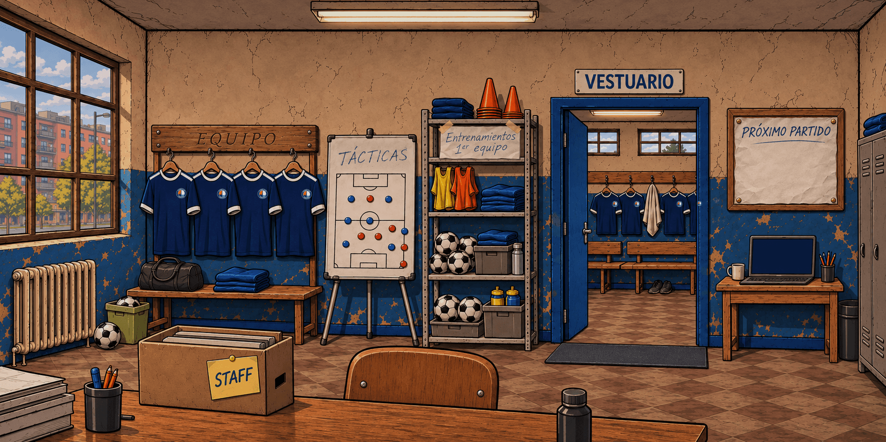
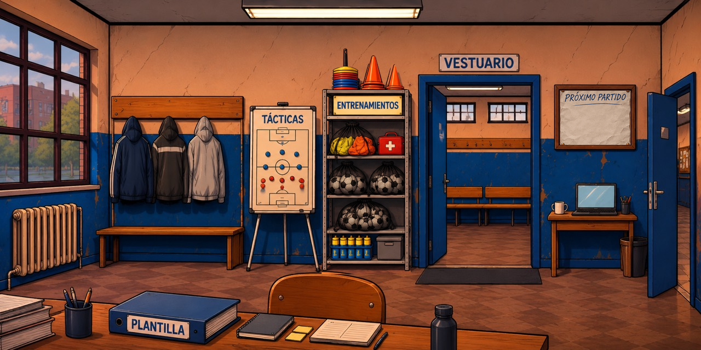

Panel del club · Archivador PLANTILLA
Candidata técnica para revisión artística. Se han compuesto las referencias del autor: habitación general, detalle específico de estantería y hoja de partido ya existente. No se ha generado una ilustración nueva.
Plantilla se abre desde el archivador azul de la mesa. El perchero de tres chaquetas es ambiental. Staff deja de ser una pantalla de navegación. El interior visible del vestuario está vacío y la puerta derecha queda entreabierta; el pasillo definitivo sigue pendiente. El recorrido inicial conserva sus bloqueos.
En móvil la habitación se desplaza horizontalmente para acceder a todos los objetos. La comprobación visual y táctil en Safari sigue pendiente: estas imágenes son recursos estáticos, no capturas del juego.
Vista completa


Detalles
El encuentro y la clasificación se incorporan desde la partida al abrir el juego. En esta comparación estática se muestran sus superficies vacías. El rediseño interno de Plantilla, las tarjetas del Estado del vestuario y la retirada de reglas económicas pertenecen a encargos posteriores.